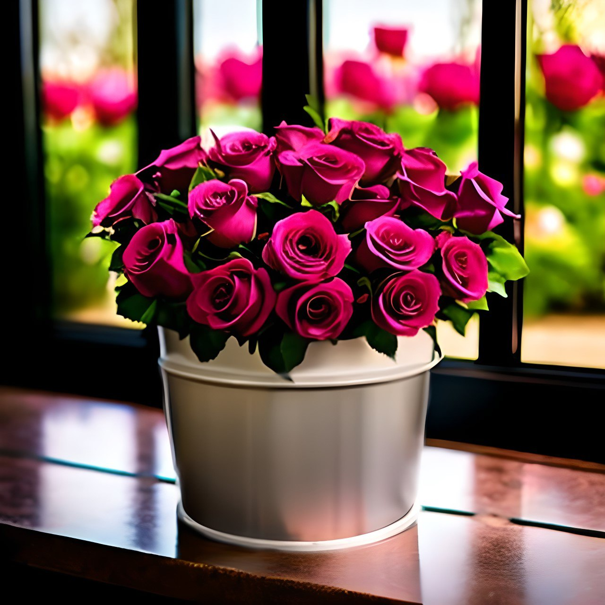
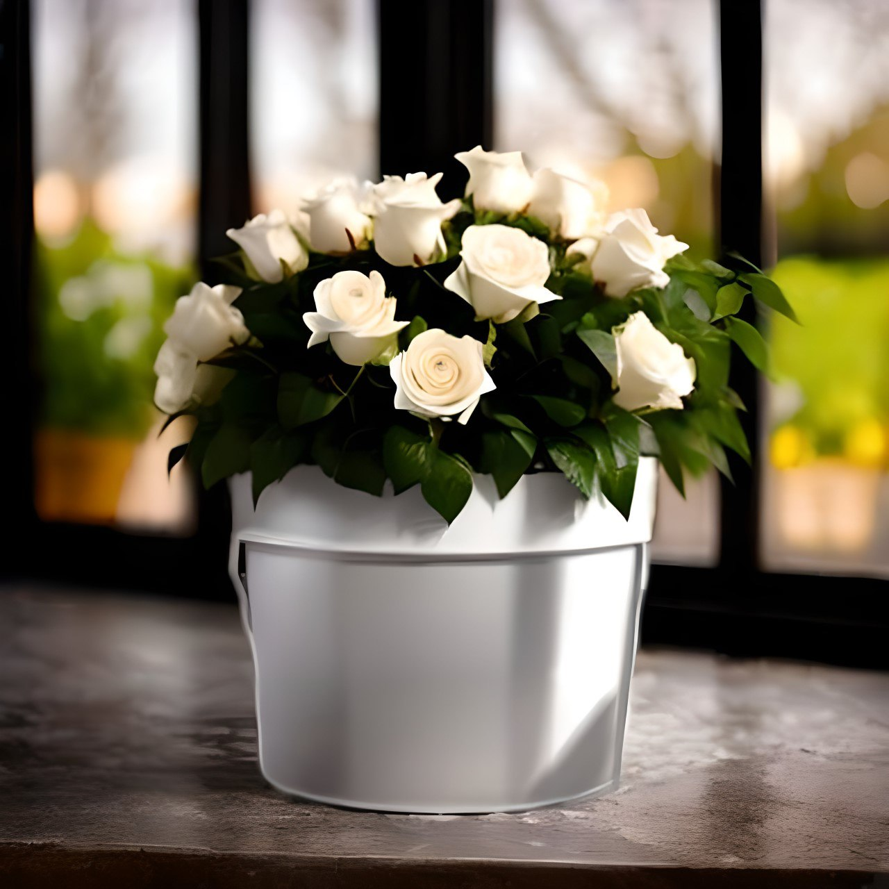
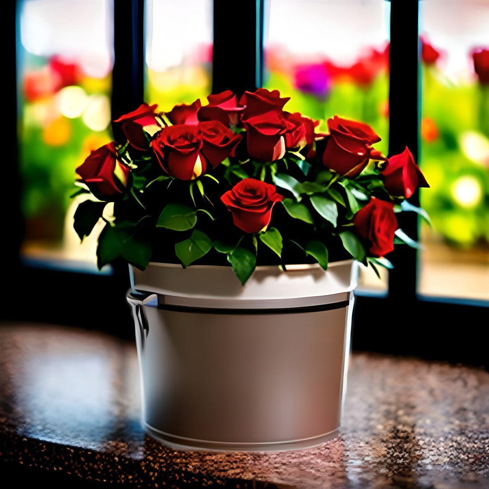

We are "Rose"
Where beauty blooms naturally.
Hand-grown, perfectly nurtured, and always fresh
About Us
At "Rose", we believe that every rose carries a story of elegance, love, and timeless
beauty.
We take pride in growing our own roses, carefully cultivating three exquisite varieties
under the best possible conditions to ensure exceptional quality.
With a deep passion for floriculture, we nurture our roses using sustainable and natural
methods, free from artificial enhancements. Each bloom is a testament to our dedication,
flourishing with vibrant colors, rich fragrance, and pure freshness.
From delicate gestures of romance to grand expressions of admiration, our roses bring
nature’s
finest artistry to life.
Experience the beauty of truly natural, homegrown roses.
Our Roses
-

🌸 Pink Potted Roses
Delicate and romantic, these pink roses symbolize love, gratitude, and admiration. Their soft petals and elegant bloom make them a perfect gift for someone special or a charming addition to your home. Placed in a stylish pot, they bring a sense of warmth and serenity, creating a cozy atmosphere in any space. Pink roses are also associated with appreciation and joy, making them an excellent choice for expressing heartfelt emotions. Whether displayed on a windowsill, desk, or balcony, these roses will brighten your surroundings with their gentle beauty.
-

🖤 White Potted Roses
Elegant and timeless, these white roses represent purity, new beginnings, and sophistication. Their pristine petals bring a fresh and calming presence to any environment, making them an ideal choice for home decor or a thoughtful gift. White roses are often associated with peace and harmony, creating a tranquil ambiance wherever they are placed. Whether used as a centerpiece, in an office, or as a wedding gift, these graceful blooms will add a touch of class and refinement to any setting.
-

🌹 Red Potted Roses
Bold and passionate, these red roses are a symbol of love, desire, and deep emotions. Their rich, velvety petals captivate the eye and make a striking statement in any room. Perfect for romantic gestures, anniversaries, or simply as a way to bring vibrant color into your space, these roses are full of life and energy. Red roses are also known to inspire confidence and warmth, making them a meaningful gift for a loved one. Placed in a decorative pot, they become a stunning focal point that exudes passion and elegance.
Contacts
For order please contact us by:
email: order.roses@somemail.com